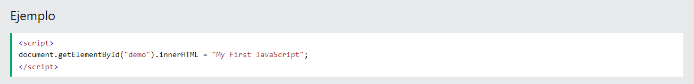
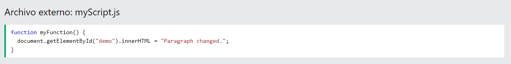
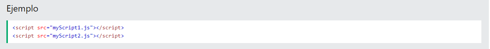

En HTML, el código JavaScript se inserta entre las etiquetas :
 Un JavaScript functiones un bloque de código JavaScript, que se puede ejecutar cuando se "llama".
Por ejemplo, se puede llamar a una función cuando ocurre un evento , como cuando el usuario hace clic en un botón.
Puede colocar cualquier número de secuencias de comandos en un documento HTML.
Los scripts se pueden colocar en el body, o en la head sección de una página HTML, o en ambos.
functionEn este ejemplo, se coloca un JavaScript en la head sección de una página HTML.
La función se invoca (llama) cuando se hace clic en un botón:
functionEn este ejemplo, se coloca un JavaScript en la body sección de una página HTML.
La función se invoca (llama) cuando se hace clic en un botón:
Los scripts también se pueden colocar en archivos externos:
Los scripts externos son prácticos cuando se usa el mismo código en muchas páginas web diferentes.
Los archivos JavaScript tienen la extensión de archivo .js .
Para usar una secuencia de comandos externa, coloque el nombre del archivo de secuencia de comandos en el src atributo (fuente) de una script etiqueta:
Puede colocar una referencia de secuencia de comandos externa en head o body como desee.
El script se comportará como si estuviera ubicado exactamente donde se encuentra la script etiqueta.
Colocar scripts en archivos externos tiene algunas ventajas:
Para agregar varios archivos de script a una página, use varias etiquetas de script:
Se puede hacer referencia a un script externo de 3 maneras diferentes: